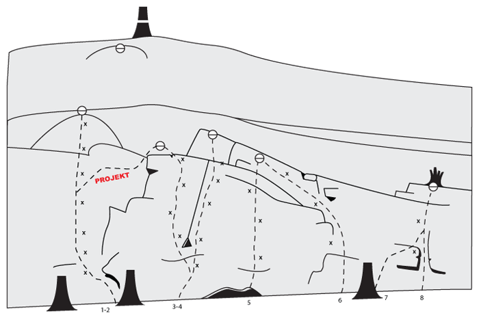
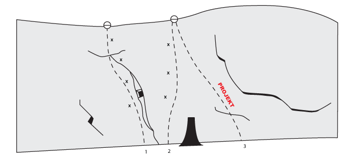

Lat: 59.186123 Long: 17.684405
Ny sport- och tradklippa i närheten av Södertälje. Mycket nyturspotential! Både sport och trad. Klippan står omnämnd i Stockholmsföraren anno 2008 på sidan 282-283. Fler av väggarna har nu utvecklats. Alla projekt är öppna. Svalt och kalasbra stick varma sommardagar, då även en kortare regnskur spelar mindre roll eftersom klippan är någorlunda brant. Andra dagar kan dock klippan upplevas som fuktig, mörk, myggig och ganska inattraktiv. Torkar dessutom väldigt sakta.
De flesta vintrar bildas även ett antal korta men fina isleder på klippan. Väl värt ett stopp för någon timmes lättillgänglig isklättring.
<div style="float: right"> <googlemap version="0.9" lat="59.186123" lon="17.684405" type="map" zoom="15"> http:// 59.186123, 17.684405 </googlemap> </div>
OBS! Ny parkeringsplats. Se nedan.
Åk E4 mot Södertälje. Sväng av vid trafikplats Moraberg och sikta på skyltar mot väg 225 Nynäshamn genom rondellerna. Kör över E4 och åk tills du kommit igenom första rondellen på 225:an. Tyvärr får man numera parkera i den lilla fickan vid rondellen och fortsätta rakt fram genom rondellen till fots de sista 800-900 metrarna till klippan efter som parkeringen på grusremsan blivit ett dike.
Markören på kartan anger gamla parkeringen där man går över vägen till sportklättringen - inte någon av klipporna.
Till tradturerna:
Gå ca 800 meter på 225:an på cykelbanan och sväng in vänster i skogen efter ett litet elskåp av något slag.
Till sportklättringen:
Precis innan skylten som hänger över vägen och informerar om "Gärtuna, AstraZeneca och Igelstaverket" efter ca 900 meter gå över vägen och ner till viltstängslet. Följ detta åt höger tills du kommer till en provisorisk, fast stege. Klättra över och fortsätt höger och sedan in till klippan efter 20 meter.
Vänsterdelen
Minst utvecklade delen av den stora glasbergaväggen. Lite blockig klättring med mycket nyturspotential.
Mittendelen
Mittendelen är den mest utvecklade delen av klippan. Enormt mycket olika sorters grepp och steg gör att varianterna mellan lederna är väldigt många. Gemensamt för lederna är dock att starterna är glesare på grepp och därför ger en bouldrig karaktär. Ovanför klippan vid det gulmarkerade trädet finns ett arbets- och firningsankare (provisorium med förzinkade bultar och ringhängare).
Högerdelen
Från mittendelen och ut höger blir det betydligt mossigare och mörkare, men under mossan döljer sig ibland finfina formationer. Knalla ca trettio meter längst klippans fot så dyker följande fina leder upp:
Vägväggen
På cykelvägs-sidan av vägen finns några tradturer och potential för fler. Från vänster till höger.
Lederna 2-5 går på det högsta väggpartiet bakom träden och ovanför detta, och har rapporterats till Plonk.se:
Ca 15 meter till höger om urtoppningen av led nummer 3 finns ett väggparti med två korta men fina sprickturer:
I högerkanten av mellanväggen brukar det bildas en ledbar 25m hög isled. Bökig att komma åt ovanifrån om man vill topprepa
På trad-sidan finns flera kortare leder som kan toppas eller ledas. Den mest uppenbara är en delvis fristående pelare som går rakt ner i kanten av cykelvägen. Lite längre mot Södertälje, innan vägenväggen, finns en kortare vägg uppe i backen med 3-4 st kortare men fina isar. Väggen nås genom en strategiskt placerad grind i viltstängslet.

Kategori:sport
Kategori:trad
Kategori:is
Kategori:sva
Kategori:Stockholm
Kategori:vertikalt
Kategori:Västra Södertörn
kategori:Saknar skrivarformatering